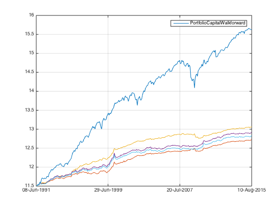
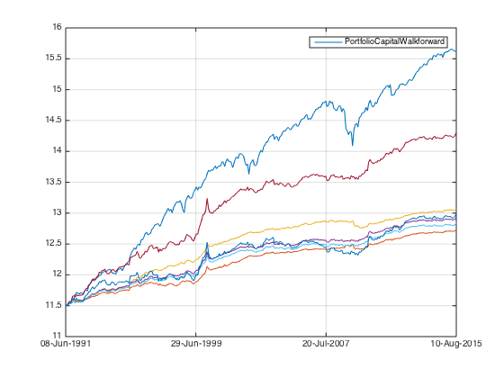

Combined Factors - the silent drain of interest rate.
no matter how I improve the strategy performance, a few things are certain. Transaction cost, margin loan interest rate & divident tax.
Contents
let's take a look at the amazing effect of margin loan interest.
Preparation
Let's load the data from ..
load('../data_equity_list_us.mat'); load('../data_field_list.mat'); load('../data_historical_data_us.mat'); load('../rfr_ts.mat'); load('../cap_benchmark_ts.mat'); load('../spx_ts.mat');
take data sample, load data & the list
index = datasample(1:1300,1000,'Replace',false);
px = fun_load_price(history_us, equity_list_us, index);
px = fun_clean_data(px);
list = equity_list_us(index,:);
load observations
mom_ts = fun_calculate_mom(px); pb_ts = fun_load_observations(history_us, equity_list_us, index,'pb'); cap_ts = fun_load_observations(history_us, equity_list_us, index,'cap'); beta_ts = fun_load_observations(history_us, equity_list_us, index,'beta'); grossmargin_ts = fun_load_observations(history_us, equity_list_us, index,'gm'); turnover_ts = fun_load_observations(history_us, equity_list_us, index,'turnover'); roa_ts = fun_load_observations(history_us, equity_list_us, index,'roa'); leverage_ts = fun_load_observations(history_us, equity_list_us, index,'leverage');
calculate score
score_mom_ts = fun_calculate_score(mom_ts,list,'sectorsort',px); score_pb_ts = -fun_calculate_score(pb_ts,list,'sectorsort',px); score_cap_ts = -fun_calculate_score(cap_ts,list,'sectorsort',px); score_beta_ts = -fun_calculate_score(beta_ts,list,'sectorsort',px); score_leverage_ts = -fun_calculate_score(leverage_ts,list,'sectorsort',px); score_roa_ts = fun_calculate_score(roa_ts,list,'sectorsort',px); score_grossmargin_ts = fun_calculate_score(grossmargin_ts,list,'sectorsort',px); score_turnover_ts = fun_calculate_score(turnover_ts,list,'sectorsort',px); % score_leverage_ts = fillts(score_leverage_ts,0); % score_roa_ts = fillts(score_roa_ts,0); % score_grossmargin_ts = fillts(score_grossmargin_ts,0); % score_turnover_ts = fillts(score_turnover_ts,0); score_quality_ts = score_leverage_ts+score_roa_ts+score_grossmargin_ts+score_turnover_ts; score_quality_ts = fun_combine_score(score_quality_ts);
Trim
score_roa_ts = score_roa_ts(75:end); score_leverage_ts = score_leverage_ts(75:end); score_grossmargin_ts = score_grossmargin_ts(75:end); score_turnover_ts = score_turnover_ts(75:end); score_mom_ts = score_mom_ts(75:end); score_pb_ts = score_pb_ts(75:end); score_cap_ts = score_cap_ts(75:end); score_beta_ts = score_beta_ts(75:end); score_quality_ts = score_quality_ts(75:end); % score_mom_ts = fillts(score_mom_ts,0); % score_pb_ts = fillts(score_pb_ts,0); % score_cap_ts = fillts(score_cap_ts,0); % score_beta_ts = fillts(score_beta_ts,0); % score_quality_ts = fillts(score_quality_ts,0); score_ts = {score_mom_ts; score_pb_ts; score_cap_ts; score_beta_ts; score_quality_ts}; px = px(75:end);
Combine score
score_weight = [0.2 0 0.4 0.1 0.3]; score_combined_ts = score_mom_ts*score_weight(1) + score_pb_ts*score_weight(2) + score_cap_ts*score_weight(3) + score_beta_ts*score_weight(4) + score_quality_ts*score_weight(5); score_combined_ts = fun_combine_score(score_combined_ts);
There is much less securites than you expeced.
score_mat = fts2mat(score_mom_ts); score_mat(not(isnan(score_mat)))=1; plot(nansum(score_mat,2)); hold on; score_mat = fts2mat(score_pb_ts); score_mat(not(isnan(score_mat)))=1; plot(nansum(score_mat,2)); hold on; score_mat = fts2mat(score_cap_ts); score_mat(not(isnan(score_mat)))=1; plot(nansum(score_mat,2)); hold on; score_mat = fts2mat(score_beta_ts); score_mat(not(isnan(score_mat)))=1; plot(nansum(score_mat,2)); hold on; score_mat = fts2mat(score_quality_ts); score_mat(not(isnan(score_mat)))=1; plot(nansum(score_mat,2)); hold on; score_mat = fts2mat(score_combined_ts); score_mat(not(isnan(score_mat)))=1; plot(nansum(score_mat,2)); hold off;
Benchmark
portfolio_weight_eq_weight_ts = fun_portfolio_weight_sector_neutral(score_combined_ts,'equalweight'); portfolio_rt_ts = fun_portfolio_return(px, portfolio_weight_eq_weight_ts); benchmark = [100; 100*exp(fts2mat(cumsum(portfolio_rt_ts)))]; benchmark_ts = fints(px.dates, benchmark,'EqualWeightIndex');
Extraordinary ideal result
long only performance
portfolio_weight_ts = fun_portfolio_weight_sector_neutral(score_combined_ts,'longonly'); portfolio_rt_ts = fun_portfolio_return(px,portfolio_weight_ts); portfolio_capital_ts = 100000*exp(cumsum(portfolio_rt_ts)); plot(log(portfolio_capital_ts)); hold on; snapnow;
risk neutral factor portfolio
portfolio_capital_ts = fun_sequential_backtest_autoadjust(100000, px, benchmark_ts,portfolio_weight_ts,false);
plot(log(portfolio_capital_ts));
hold on;
snapnow;
fun_performance_meansure(portfolio_capital_ts,benchmark_ts,true);
sharpe ratio is 1.08
vol is 0.05
return is 0.05
correlation with benchmark_ts is
1.0000 -0.2727
-0.2727 1.0000
it gets even better as we make it market neutral
portfolio_capital_ts = fun_sequential_backtest_partial(100000, px, benchmark_ts, 0.9,portfolio_weight_ts,false);
plot(log(portfolio_capital_ts));
hold on;
snapnow;
fun_performance_meansure(portfolio_capital_ts,benchmark_ts,true);
sharpe ratio is 1.39
vol is 0.05
return is 0.07
correlation with benchmark_ts is
1.0000 0.0130
0.0130 1.0000
sharpe is as high as 1.40, extraordinary by any usual long term fund performance measure. But this strategy is only 5% vol and 6% return per annual, without considering transaction cost and funding cost.
let's use more realistic surgical walkforward without cost.
portfolio_capital_ts = fun_sequential_backtest_surgical_debug(100000, px, benchmark_ts, rfr_ts, portfolio_weight_ts,list,1, 0.9, false,50,1,true,false);
plot(log(portfolio_capital_ts));
hold on;
snapnow;
fun_performance_meansure(portfolio_capital_ts,benchmark_ts,true);
sharpe ratio is 0.99
vol is 0.06
return is 0.06
correlation with benchmark_ts is
1.0000 0.0858
0.0858 1.0000
with 100 bps broker margin loan cost
portfolio_capital_ts = fun_sequential_backtest_surgical_debug(100000, px, benchmark_ts, rfr_ts, portfolio_weight_ts,list,1, 0.9, false,50,1,false,false);
plot(log(portfolio_capital_ts));
hold on;
snapnow;
fun_performance_meansure(portfolio_capital_ts,benchmark_ts,true);
sharpe ratio is 0.93
vol is 0.06
return is 0.06
correlation with benchmark_ts is
1.0000 0.0859
0.0859 1.0000
I didn't take any leverage so the decrease is transaction cost speaking.
with prevailing rfr+100bps loan interest rate, without leverage I should expect the same result...
portfolio_capital_ts = fun_sequential_backtest_surgical_debug(100000, px, benchmark_ts, rfr_ts, portfolio_weight_ts,list,1, 0.9, false,50,1,false,true);
plot(log(portfolio_capital_ts));
hold on;
snapnow;
fun_performance_meansure(portfolio_capital_ts,benchmark_ts,true);
 sharpe ratio is 0.93
vol is 0.06
return is 0.06
correlation with benchmark_ts is
1.0000 0.0859
0.0859 1.0000
as expected! but this risk and return is too low. Notice that the sharpe is still ok. 1.4(long only) -> 0.95(50 surgical) -> 0.89 ( with transaction cost). The largest drop happened when I move from score weighted to surgical...
let's take 2x leverage. without any cost.
portfolio_capital_ts = fun_sequential_backtest_surgical_debug(100000, px, benchmark_ts, rfr_ts, portfolio_weight_ts,list,2, 0.9, false,50,1,true,false);
plot(log(portfolio_capital_ts));
hold on;
snapnow;
fun_performance_meansure(portfolio_capital_ts,benchmark_ts,true);
sharpe ratio is 1.01
vol is 0.12
return is 0.12
correlation with benchmark_ts is
1.0000 0.0944
0.0944 1.0000
I roughly doubled the risk and return, there is little change in sharpe.
but as I start to take cost into consideration...
portfolio_capital_ts = fun_sequential_backtest_surgical_debug(100000, px, benchmark_ts, rfr_ts, portfolio_weight_ts,list,2, 0.9, false,50,1,false,true);
plot(log(portfolio_capital_ts));
hold on;
snapnow;
fun_performance_meansure(portfolio_capital_ts,benchmark_ts,true);
 sharpe ratio is 0.56
vol is 0.12
return is 0.07
correlation with benchmark_ts is
1.0000 0.0955
0.0955 1.0000
increase the leverage doesn't improve the performance at all! it purely increase the volatility, all the extra return from leverage went into broker's loan interest payment. For the testing period, the benchmark rate has been as high as 12% and averaged at 4~5%. plus the broker loan interest rate spread, the cost for leverage is 5~6%, well over the extra return generated by take leverage.
In reality I should get compensated from rolling the index futures hedge. The rolling yield should be very close to rfr. As you can see, for leveraged factor portfolio, I CANNOT OVER EMPHASIZE THE IMPORTANCE OF ROLLING YIELD! The real performance is more likely to be this:
portfolio_capital_ts = fun_sequential_backtest_surgical_debug(100000, px, benchmark_ts, rfr_ts, portfolio_weight_ts,list,2, 0.9, false,50,1,false,false);
plot(log(portfolio_capital_ts));
hold on;
snapnow;
fun_performance_meansure(portfolio_capital_ts,benchmark_ts,true);
sharpe ratio is 0.89
vol is 0.12
return is 0.11
correlation with benchmark_ts is
1.0000 0.0943
0.0943 1.0000
obviously I can make the performance smoother by increase the security number. As the biggest fall in performance occured when I move from score weight to surgical topm equal weight...
portfolio_capital_ts = fun_sequential_backtest_surgical_debug(100000, px, benchmark_ts, rfr_ts, portfolio_weight_ts,list,2, 0.9, false,100,1,false,false);
plot(log(portfolio_capital_ts));
hold on;
snapnow;
fun_performance_meansure(portfolio_capital_ts,benchmark_ts,true);
sharpe ratio is 1.12
vol is 0.08
return is 0.09
correlation with benchmark_ts is
1.0000 0.2614
0.2614 1.0000
Conclusion
- Interest cost is significant, it makes or breaks a leveraged portfolio
- ROLLING IS IMPORTANT
- Biggest drop occured when I move from score weight to equal weight. This make sense as equal weight doesn't give extra weight for high score securities. But I didn't realize the impact could be so much.